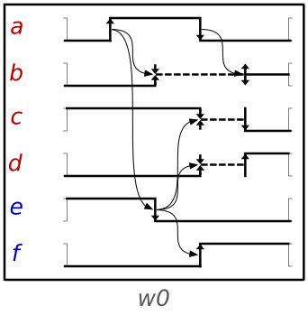
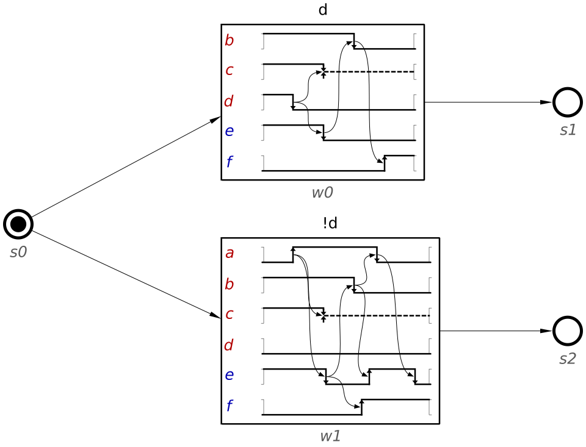
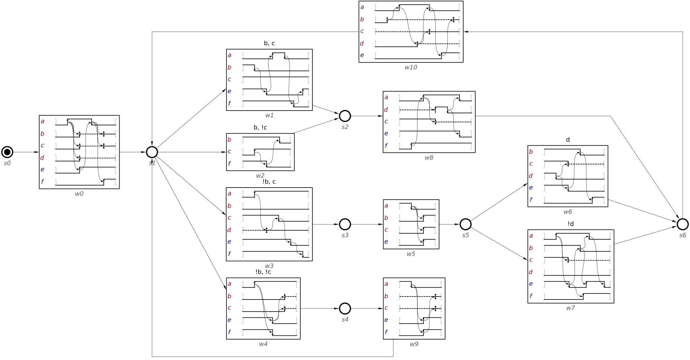

Table of Contents
Waveform Transition Graph
Wave Transition Graph (WTG) is a model used for the design of asynchronous controllers [1]. It can express a wide range of circuits and can be easily converted into STGs, which allows an easy access to all the verification and synthesis tools available for STG. In fact, the expressiveness for WTG is a subclass of STG in which concurrency and choice are mutually exclusive. Yet, the structured nature of Waveforms, one of the basic elements of WTGs, often makes them easier to understand, even for complex designs.
The following sections describe the structure of the WTG by introducing waveforms and nodal states. Guards are a particular type of sequencing that is supported by WTG and is described afterwards. Finally, some design restrictions are explained.
Waveforms
A waveform defines a partial behavior of the system between two states. They have similar semantics to Digital Timing Diagrams (DTD) and can describe concurrency between events. But, like in DTDs, no choice is allowed inside a waveform. Transitions in a waveform are defined by arrows, and they explicitly change the state for a signal. This state is represented graphically at any moment. Arcs between transitions define precedence. For example, an arc from transition t1 to transition t2 indicates that transition t2 cannot fire until transition t1 has done so. It is often possible to fire two or more transitions at a given moment, indicating concurrency.
A signal can be in four different states:
low: Corresponds to the logiczeroand is represented as a lower line.high: Corresponds to the logiconeand is represented as an upper line.unstable: Represents that a signal is in an unknown and changing state. A signal in this state might change an arbitrary number of times, including none. It is represented by a slashed line.stable: Represents that a signal is in an unknown but unchanging state. While the actual state of a stable signal is unknown, it is guaranteed that no transitions occur. It is represented by a middle line.
Only inputs may become unstable/stable, since output/internal signals must be exactly defined at any moment.
Matching all the possible states for a signal, there are also four types of transitions:
rise: Sets the state of the signal tohigh. Can only be fired when the signal is at stateloworunstable.fall: Sets the state of the signal tolow. Can only be fired when the signal is at statehighorunstable.stabilise: Sets the state of the signal tostable. Can only be fired when the signal is atunstable.destabilise: Sets the state of a signal tounstable. Can only be fired when the signal is athighorlow. A signal atstablecannot fire adestabilisetransition.
The next figure shows An example of a waveform with all types of transitions.

Transitions between stable/unstable states (i.e. stabilise, destabilise and high/low from unstable) do not represent actual changes in the logic value of a signal. These represent the fact that a signal value becomes known/unknown. Another way of reasoning about them is that an unstable state is when we do not care about its value or we want to explicitly ignore it. In this way, a signal is stable when, while we do not care about its value, we need to know that it is not changing anymore.
Waveforms must always have a preceding and succeeding nodal state (entry and exit state, respectively), which can potentially be the same. A waveform can be enabled when the preceding state has a token in it. (Note that the presence of guards might prevent a waveform from being enabled even if a token is present in the preceding state – this is discussed later.) After all the transitions in a waveform are fired, a token is set into the succeeding state.
Nodal states
The nodal states are used to represent the sequencing of waveforms in a WTG. A state is connected by arcs to any number of waveforms, but never to other states. One of the states must be defined as initial, which sets a token on it. A token in a state indicates that all its preceding waveforms are enabled, but only one of them can be fired. This allows choice of waveforms, but never concurrency. After all the transitions in a waveform have been fired, the token is passed to the exit state of the waveform.
A choice is represented when a state has two or more succeeding waveforms. There are two types of choices: common choices and guarded choices. Common choices are identical to the ones present in STGs and they are decided depending on which input signals are fired. Guarded choices, on the other hand, require a more in depth explanation.
The next figure shows the choice between two waveforms. After the waveforms are fired, the token will pass from the entry state s0 into the exit state for the waveform that is fired, s1 or s2. It can be a valid design if both waveforms had the same exit state instead of two different states.

Guards
WTG supports the definition of guards for waveforms. They can be seen as an if condition and is decided according to the values of the signals that are guarded. For example, a waveform may have a guard for signal a and will only be enabled, in a choice, if a is set to high.
Conditions for more than one signal are also supported, but they must always be set as conjunction of literals. For example, the condition a,!b,!c would only allow a waveform to be enabled if a is set to high and b and c are set to low.
Guards can only be set in states with choices. Furthermore, the conditions for the guards in a given choice must be complete: there must be a guard for any of the possible options or values that the signals might take. This implies that if a choice has a guard for n signals, there must be exactly 2n waveforms, one for every possible value for every signal.
Finally, guards can only be set for signals that are at ‘stable’ state before the choice.
The next figure shows a complete WTG. Note how the waveforms w1-4 and w6-7 make use of guards.

Design restrictions
This section discusses some restrictions that arise when modeling WTGs for synthesis as asynchronous circuits. Some of them are necessary due to the structure of the model, while others are common to other models for asynchronous circuits.
- The initial signal state of a signal before any transition for that signal occurs in the WTG has to be
loworhigh. This only refers to the very first initial state; a signal may bestableorunstableas the initial state of a waveform, as long as this signal had a previous transition. - Only inputs can become
stable/unstable. There is a number of reasons for this restriction, but probably the most basic one is that outputs must be totally defined, since we are generating them. Besides that,unstabletransitions are non-deterministic and non-persistent, both of which preclude synthesis of speed-independent circuits. - Guards can only be defined for input signals. This is a direct consequence of the previous restriction.
- The first transition in a waveform after a choice (guarded or otherwise), must be for an input signal. This is necessary to maintain output persistency (i.e. outputs cannot be disabled).
- Transitions from/to
stable/unstablestates can only trigger inputs. These transitions are not real in the same sense as ‘high’ or ‘low’ transitions are. In particular, they cannot be observed by the circuit and thus it cannot react to them. The environment, on the other hand, knows at which point a certain signal becomesunstable/stableand so input signals can be used as proxy to react to these events. - An internal signal cannot trigger an input signal. This is called input-properness and is a restriction that exists in other models for speed-independent asynchronous circuit synthesis. The environment cannot observe internal signals and thus cannot react to them. This restriction can be lifted when timing assumptions are involved (i.e. not a speed-independent circuit). Note that, in a WTG, an internal signal can trigger an input in two ways: within a waveform, by an arc from an internal to an input, and between different waveforms. The latter may occur when the last transition of a waveform is an internal signal. In this case, the next waveform that is enabled must have, as first transition, an output signal. Note that this means that no choices are allowed in this case.